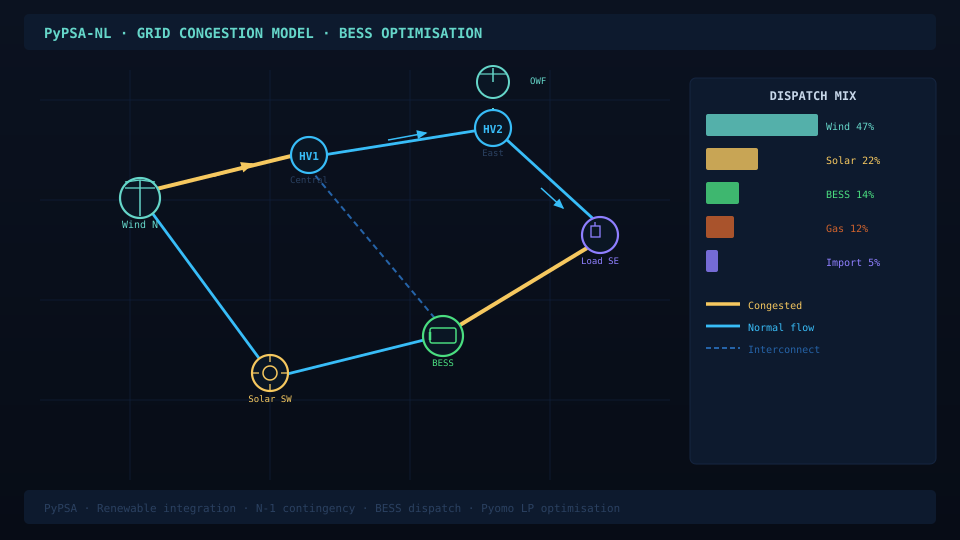
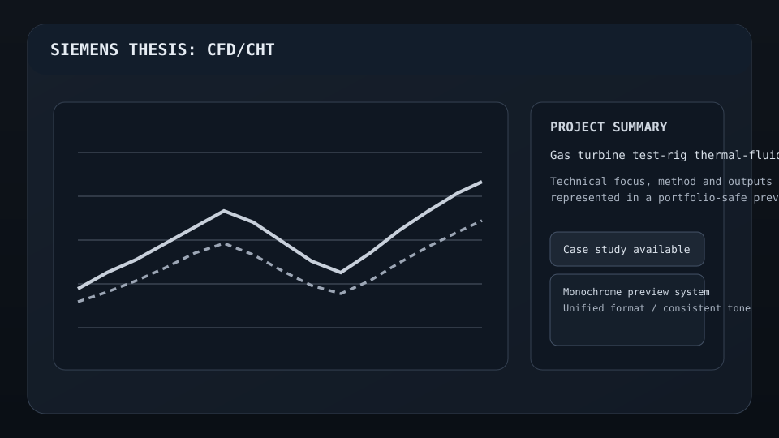
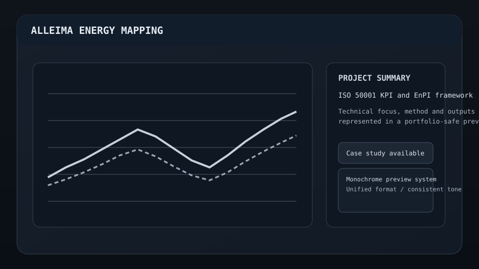
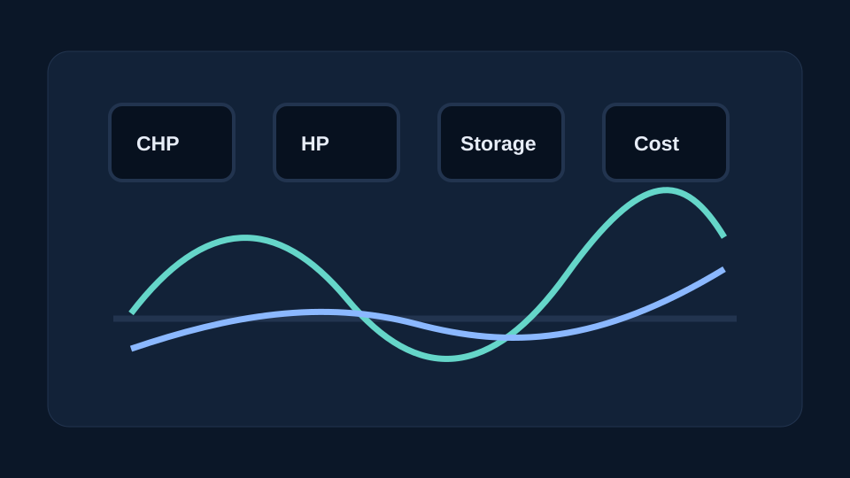
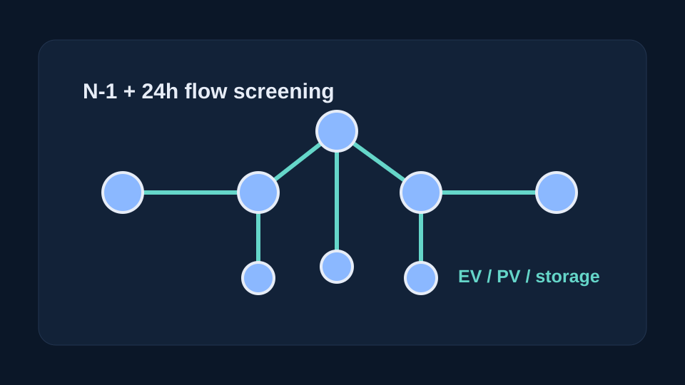

Grid & energy modelling
PyPSA, Pyomo, PuLP, dispatch optimisation, grid-flow studies, BESS siting, EV/PV/storage impacts, hydrogen network modelling and district-heating scenarios.
Energy systems modelling · Grid flexibility · BESS · PyPSA · Python
I am an M.Sc. Sustainable Energy Engineering candidate at KTH Royal Institute of Technology with experience across thermal-fluid modelling, test-rig validation, industrial energy efficiency, grid and hydrogen modelling, optimisation and Python-based engineering analytics.
Explore
The site now separates project cases, role experience and technical background into their own pages, while this homepage stays focused on the strongest signals.
Grid flexibility, hydrogen, carbon exposure, energy KPIs, vibration diagnostics and optimisation projects.
02Siemens Energy, Alleima, QBurst and KTH work framed around transferable engineering value.
03Skills, education, tools and positioning for energy systems, thermal engineering and analytics roles.
Profile
PyPSA, Pyomo, PuLP, dispatch optimisation, grid-flow studies, BESS siting, EV/PV/storage impacts, hydrogen network modelling and district-heating scenarios.
Siemens Energy Fluid Dynamic Lab experience with ANSYS Fluent CFD/CHT, k-omega SST, pressure-loss analysis, NI-DAQ/LabVIEW measurement chains and validation planning.
Python, pandas, NumPy, SciPy, matplotlib, Plotly, Streamlit, Git, Docker, REST APIs, automated testing, reproducible project packaging and decision-support dashboards.
Selected work
A focused portfolio of energy-system, grid-flexibility, optimisation and engineering-validation work.

Netherlands-inspired constrained-grid workflow comparing renewable growth, bottlenecks, connection-capacity limits, BESS siting, flexible connection contracts and targeted reinforcement.

Measurement-chain commissioning and thermo-fluid modelling work around high-temperature gas-turbine-related test rigs.

Energy performance mapping, KPI/EnPI thinking, metering readiness, loss analysis and improvement-roadmap work.

Multi-asset heat dispatch optimisation with CHP, heat pumps, biomass/geothermal assets, outages, CO2 and electricity-price coupling.

CIGRE MV network-style power-flow, N-1 and 24-hour simulation study with EV charging, PV and storage impacts.

Day-ahead building heating-demand forecasting using weather and temporal features, baseline models and neural networks.

Coupled offshore wind, PEM electrolyzer and hydrogen-pipeline model with MILP dispatch optimisation.

Excel and Streamlit toolkit for estimating Scope 1 emissions, EUA cost exposure and carbon-intensity trends.

Python, Excel and Streamlit toolkit for industrial EnPIs, baseline normalisation, anomaly flags and management reporting.

Low-cost vibration workflow using phone accelerometer data, filtering, FFT/PSD, spectrograms and report generation.
Capabilities
PyPSA, Pyomo, PuLP, BESS siting, renewable curtailment, flexible connection logic, power-flow studies, N-1 screening, EV/PV/storage impacts, district heating, hydrogen networks.
Python, pandas, NumPy, SciPy, time-series analysis, scenario modelling, KPI reporting, Streamlit, Plotly, matplotlib, regression/classification basics, model evaluation.
ANSYS Fluent, CFD/CHT, k-omega SST, pressure-loss and thermal-delivery analysis, mesh/near-wall checks, NI-DAQ, LabVIEW, thermocouples, static/dynamic pressure sensors.
Git, Docker, REST APIs, Postman, automated endpoint tests, structured debugging, reproducible repositories, documentation, CI-oriented workflows and dashboarding.
Education
Formal training across sustainable energy systems, heat and power technology, optimisation, built-environment energy, storage and mechanical engineering.
Focus areas include thermodynamics, heat and mass transfer, thermal systems, energy systems modelling, practical optimisation, data-driven forecasting, power systems fundamentals and techno-economic analysis.
Coursework on circular economy concepts for energy storage systems, supporting battery, lifecycle and sustainability analysis work.
Mechanical engineering foundation in thermodynamics, fluid mechanics, heat transfer, CAD/CAE, manufacturing and machine design, with SAE Collegiate Club and NSS activities.
Background
Commissioned NI-DAQ measurement-chain elements for thermocouple and pressure-sensor rig tests, refined LabVIEW acquisition workflows, and developed ANSYS Fluent CFD/CHT models for pressure-loss and thermal-delivery assessment.
Built ISO 50001/EED-aligned energy performance mapping logic covering KPIs/EnPIs, load drivers, normalisation, metering readiness, measurement planning and improvement-roadmap concepts.
Implemented and maintained backend API endpoints, delivered reliability fixes, built endpoint tests including negative-path validation, and used Postman automation in production-oriented agile teams.
Conducted cost-analysis research on oil extraction from polymers and reviewed plastic-pyrolysis reactor concepts to support early-stage process evaluation.
CV
Download a current CV tailored toward grid-flow modelling, flexibility analysis, BESS, and energy systems roles.
Contact